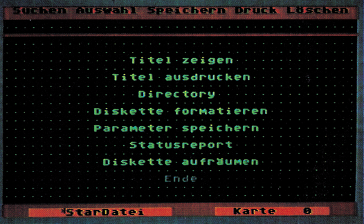
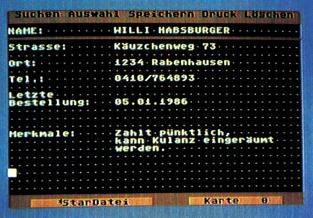

Der zweite Preishammer
Ist das Dateiverwaltungsprogramm »StarDatei« dem »StarTexter« aus demselben Hause ebenbürtig? Sybex bietet mit der Datenverwaltung »StarDatei« ein weiteres Programm in der 64-Mark-Klasse.
Bekannt und berühmt ist das Textverarbeitungsprogramm »StarTexter«. Wer damit schon einmal gearbeitet hat, kommt auf Anhieb mit »StarDatei« gut zurecht. Viele Operationen sind ähnlich. Es gibt hier genauso einen Control-Modus, in dem man mit der »CTRL-Taste« gelangt (Bild 1), der auch die Menüauswahl (es stehen drei zur Verfügung) steuert.

Gleich nach dem Laden des Hauptprogrammes gelangt man in das Eingabefeld von »StarDatei«. Eine Maskendefinition, wie bei anderen Dateiverwaltungsprogrammen, wird hier nicht angewendet.
Jeder Datensatz hat immer ein Eingabefeld von 19 mal 40 Zeichen frei zur Verfügung. Um immer wiederkehrende Bezeichnungen, wie »Adresse:« oder ähnlichen nicht bei jedem Datensatz neu schreiben zu müssen, kann man sich eine komplette Seite »merken« lassen und bei Bedarfjederzeit auf den Bildschirm zurückholen. Es gibt keine festen Datenfelder mit einer erzwungenen Eingabe.
Menüwahl durch Control-Modus
Dieses System hat aber auch seine Nachteile. Es fehlen Hilfen wie TAP oder POS um schnell eine bestimmte Bildschirmposition zu erreichen. Ebenso wird bei jedem Datensatz die gesamte Information, also auch die Feldbezeichnungen wie »Name, Adresse oder Telefonnummer« mit gespeichert. Der Platzverbrauch auf der Diskette ist daher sehr groß.
Suchen und Finden von Datensätzen
Jeder Datensatz hat eine Titelzeile, die ein schnelles Auffinden ermöglicht. Nach ihr werden die Datensätze alphabetisch sortiert. Da die Daten in einem besonderen Algorithmus gespeichert sind, wird die Diskette entsprechend formatiert. Jede Diskette darf nur eine Datei enthalten. Dieses ermöglicht dann in wenigen Sekunden ein Wiederauffinden einzelner Datensätze. Praktisch ist es, daß man jederzeit die Diskette und damit die Datei wechseln kann. Das Programm erkennt einen Diskettenwechsel automatisch und reagiert dann entsprechend.
Einen guten Eindruck macht »StarDatei« beim Suchen und Finden von Datensätzen. Mit den von der Floppy bekannten Jokerzeichen »*« und »?« lassen sich die Kopfzeilen sekundenschnell durchsuchen und auf dem Bildschirm anzeigen. Mehrere Datensätze mit gleichem Suchwort werden alphabetisch aufgelistet.
Der Joker erleichtert die Arbeit
Damit ist die Leistungsfähigkeit keineswegs ausgeschöpft. Man kann auch verschiedene Suchbegriffe miteinander verknüpfen und so zum Beispiel bei einer Adreßdatei alle Leute, die in München wohnen und Meyer heißen, raussuchen. Man nennt dieses auch eine UND-Verknüpfung. Aber auch ODER-Verknüpfungen sind möglich. Beispielsweise lassen sich so alle Leute, die in München oder in Augsburg wohnen, bei einer angelegten Adreßdatei herausfinden. Die UND- beziehungsweise ODER-Verknüpfung kann im Suchbegriff auch mehrmals vorkommen, aber leider nicht gemischt.
Es können natürlich nicht nur die Titelzeilen durchsucht werden, sondern auch einzelne Teile aus den Datensätzen selber. Das dauert aber länger, da dazu auf die Diskette zugegriffen werden muß. Jeder gefundene Datensatz wird dann wieder in alphabetischer Reihenfolge auf dem Bildschirm aufgelistet und man kann auswählen, ob man ihn in den Speicher übernehmen oder weiterblättern will. Dabei lassen sich auch einzelne Datensätze markieren, beispielsweise um sie dann später auszudrucken oder mit »Star-Texter« weiter verarbeiten zu lassen (Bild 2).

Bemerkenswert gut gelöst sind die diversen Möglichkeiten, sich einen Überblick der vorhandenen Daten zu verschaffen. Läßt man jeden Datensatz durch ein Zeichen auf dem Bildschirm anzeigen, erhält man eine gute Übersicht der Datenmengen. Fährt man jetzt mit dem
Immer die Übersicht!
Cursor durch diese Anzeige, bekommt man die Titelzeile des jeweiligen Datensatzes gezeigt, der sich auf Wunsch vollständig auf dem Bildschirm anzeigen läßt. Auf Wunsch kann man sich einzelne Datensätze markieren, wobei sich das verwendete Jokerzeichen in ein volles Quadrat ändert. Diese markierten Datensätze lassen sich in einer Liste zusammenfassen und nacheinander ausdrucken.
Die Druckerunterstützung
Die möglichen Fähigkeiten, die die einzelnen Drucker anbieten, werden bei weitem nicht voll ausgeschöpft. Das sind zum Beispiel Unterstreichen, Fettschrift oder auch das Format des Ausdruckes, das sich nicht frei wählen läßt. Es wird immer der Bildschirminhalt vom Drucker ausgegeben. Sinnvoll dagegen ist die Möglichkeit, sich jederzeit eine Hardcopy des Bildschirms ausgeben lassen zu können.
Nachteilig ist, daß aus dem Inhaltsverzeichnis einer Datendiskette sich nicht erkennen läßt, wieviel Speicherkapazität noch zur Verfügung steht. Man muß sich bei Bedarf einen Statusreport geben lassen, der den prozentualen Speicherverbrauch angibt. Ferner wird die Anzahl der im Moment gespeicherten Datensätze angezeigt.
Datenex- und Datenimport
Wichtig bei Dateiverwaltungsprogrammen ist vor allem der Datenexport, also die Weitergabe gesammelter Daten an andere Programme, zum Beispiel Textverarbeitungen. Leider arbeitet »StarDatei« nur mit dem »StarTexter« aus gleichem Hause zusammen. Der »StarTexter« kann die in dem speziellen Format abgelegten Daten lesen und in seinen Textspeicher übernehmen, oder auch beim Ausdrucken von Formbriefen verwenden.
Gut gelöst ist die Möglichkeit, einzelne Datenfelder mittels spezieller Zeichen für »StarTexter« zu definieren. Die so festgelegten Datenfelder lassen sich in beliebiger Reihenfolge von »StarTexter« weiterverarbeiten, so daß über die Textverarbeitung Listendruck von Datensätzen oder diverse Serienbriefe nach unterschiedlichsten Verarbeitungskriterien möglich ist. Ein weiterer Datenexport aus der »StarDatei« auf andere Textverarbeitungsprogramme ist leider nicht möglich. Dieser Umstand muß als echtes Manko bezeichnet werden. Die Übernahme von Daten durch »StarDatei« in seinen Speicher ist nur eingeschränkt möglich. Man kann eine SEQ-Datei in den Arbeitsspeicher einlesen und auf dem Bildschirm anzeigen lassen. Diese Daten lassen sich dann als Datensatz speichern, wenn sie nicht mehr als drei Blöcke auf der Diskette belegen.
Wie wäre es mit »Basic«?
Man kann jederzeit eine mathematische Berechnung durchführen. Dazu gibt man die Berechnung ins Datenfeld ein und drückt CTRL und » = «. Sofort bekommt man das Ergebnis in der nächsten Zeile darunter angezeigt. Es kann im Datensatz weiterverarbeitet werden. Selbst kleine Basic-Anweisungen innerhalb der »StarDatei« sind kein Problem. Wem das allerdings immer noch zu wenig ist, der kann für kurze Zeit »StarDatei« ganz verlassen und ein wenig in Basic programmieren. Man muß allerdings darauf achten, daß man nach jeder Kommandozeile ein »:STOP« anfügt, ansonsten wird »StarDatei« sofort wieder aktiviert.
Die oberste Bildschirmzeile ist die Kommunikationszeile, wenn man Anweisungen im Text übernehmen möchte. Eine hier plazierte Berechnung wird von »StarDatei« übernommen.
Die Parameteranpassungen
Jeder Ausdruck auf einem Drucker setzt die richtige Anpassung an dessen Fähigkeiten und Eigenheiten voraus. Da »StarDatei«-Druckmöglichkeiten wie Fettdruck oder Unterstreichung nicht unterstützt, fällt diese Druckeranpassung mager aus. Das Programm fragt dabei im Menü »Parameter« nach den wichtigsten Druckereinstellungen wie Wandlungsart, automatischer Zeilenvorschub, Anzahl der Spalten zum Einrücken beim Ausdruck und noch einiges mehr. Man kann hier wahlweise Drucker über den seriellen Bus oder über eine am User-Port simulierte Centronics-Schnittstelle ansprechen. Die Druckcodes von Umlauten, die man im Text frei verwenden kann und die normalerweise auf den Funktionstasten liegen, lassen sich hier ebenfalls festlegen. Des weiteren ist der von jeder Textverarbeitung her bekannte Zeilenumbruch, der beim Schreiben ein zu lang geratenes Wort vollständig in die nächste Zeile zieht, möglich. Diesen Zeilenumbruch kann man wahlweise ein- oder ausschalten.
Fast schon wie eine Schreibmaschine
Normalerweise entspricht die Tastaturbelegung des C 64 nicht der deutschen Schreibmaschinennorm nach (QWERTZ). Um hier jedoch trotzdem alle Umlaute eingeben zu können, wurden sie auf die Funktionstasten gelegt. Wem das zu umständlich ist, kann auch auf eine deutsche Tastenbelegungumschalten, wobeijetzt alle Zeichen dort liegen, wo sie auch bei einer deutschen Schreibmaschine zu finden sind. Auch »z« und »y« sind vertauscht.
Selbstverständlich lassen sich die Bildschirmfarben an individuelle Neigungen anpassen. Interessant, und auch von »StarTexter« her bekannt, ist die Möglichkeit, einen beliebigen Zeichensatz auszuwählen, der dann beim nächsten Neustart des Programmes mit eingeladen wird. Diese ganzen Parametereinstellungen lassen sich speichern und werden automatisch wieder aktiviert, wenn das Programm neu eingeladen und gestartet wird.
Fazit
Für einfachere Datenverwaltung, insbesondere das Führen von Adreßdateien oder auch beispielsweise Plattensammlungen, läßt sich »StarDatei« sehr gut verwenden. Wer zudem schon das Textverarbeitungsprogramm »StarTexter« besitzt, kann die gesammelten Daten sehr gut übernehmen und mannigfaltig weiterverarbeiten. Dazu kommt aber das Problem, Daten nicht frei an andere Textverarbeitungsprogramme weitergeben zu können. Auf der anderen Seite überzeugenjedoch Leistungen wie das einfache Eingeben neuer Datensätze ohne umständliche Maskendefinition mit endgültiger Festlegung aller Datenfelder. Man bekommtjedesmal einen Textbereich zur freien Verfügung gestellt und kann jederzeit die Organisation eines Datensatzes umstellen, sogar eine Notizzettelsammlung mit ungeordneten Datensätzen aufstellen.
Ferner bemerkenswert ist die Möglichkeit, kurzzeitig das Programm zu verlassen und kompliziertere, mathematische Berechnungen schnell in Basic durchzuführen. Bei Betrachtung all dieser Fähigkeiten bekommt man für 64 Mark ein gutes Programm. Wie bei Redaktionsschluß bekannt wurde, folgen weitere Kompatible Programme zum StarTexter und zur StarDatei. So zum Beispiel der StarPainter, ein Malprogramm.
(Karl Hinsch/do)Info: DTM, Data Technology Management, Borahoferweg 5, 6200 Wiesbaden, Tel.: (0 6121) 40 79 89, Preis 64 Mark.